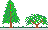
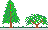

|
fltk 1.3.0rc3
About: FLTK (Fast Light Tool Kit) is a cross-platform C++ GUI toolkit for UNIX/Linux (X11), Microsoft Windows, and MacOS X. Release candidate.
 SfR Fresh Dox: fltk-1.3.0rc3-source.tar.gz ("inofficial" and yet experimental doxygen-generated source code documentation)  SfR Fresh Dox: fltk-1.3.0rc3-source.tar.gz ("inofficial" and yet experimental doxygen-generated source code documentation)  |